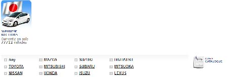
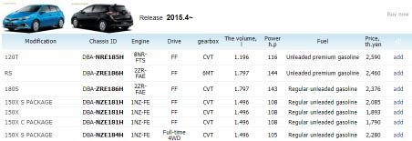
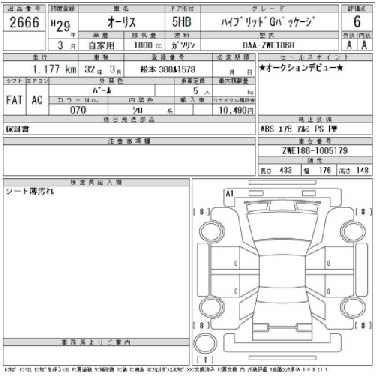
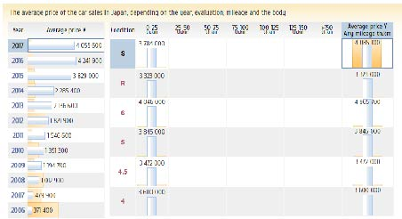

QUICK GUIDE
CAR CATALOGUE GUIDE
After you get your own auction access, first thing we recommend is to check “CARS CATALOGUE” page to know the chassis ID of the particular model you are looking for. Knowing the chassis ID of a car will effectively speed up your car search in auctions and sales statistics.
The three-letter combination in front of the chassis ID is the car’s emission. Any three letter code means this car complies with NZ emission regulation therefore will comply with NZ standards.
Now you have the chassis ID you can start searching the auctions and stats with ease!
AUCTION REPORTS
Cars from Japanese Auctions come with a detailed auction report written up by an independent qualified inspector. The report provides all the important information on the car, as well as its condition. For example Emission code, Rust issues, Panel replaced, Mechanical issues, Damaged interior, Smoker car, scratches and dents on the car. You will receive an English translation of the auction report before any bids are confirmed however we do require a reasonable bid amount before we do any translations.
VEHICLE GRADE INDICATION
We highly recommend you to search cars graded 3.5 or above.
Grade 5 – Vehicle is in brand new, demo vehicle condition with extremely low mileage
Grade 4.5 – Vehicle is in excellent condition, No slight scratches or dents
Grade 4 -- Vehicle in good condition, few scratches/dents due to normal wear
Grade 3.5 – Vehicle has a few scratches or dents visible and is in average condition. Would require some small work to make it mint.
Grade 3 – Various scratches and dents. Good chance of rust and would require some work to pass compliance
INTERIOR GRADE INDICATION
Grade A – As new condition, no faults
Grade B – Clean condition, has usual wear expected for year
Grade C – Clean but one or two defects such as cigarette burns or scratch on dash/trim
Grade D – Dirty or smells of cigarettes. Lots of wear and some rips
EXTERIOR MARKING INDICATION
Any imperfections on the exterior are noted with their position on the car diagram.
The number 1,2,3,4 are used to qualify damage as approximately minor, small, medium or serious. The following letter represent the type of damage.
A Scratch marks
B Bend/distortion or dent
BP Panel repair
C Corrosion or rust
E Dimples or dents
F Film/tinting on glass
G Chip in glass
H Hole
K Flaw
M Mark
P Paint damage
R Rust
R Repaired crack in glass
RX Repaired crack in glass that needs to be replaced
S Rust
T Temporary spare tyre
U Dents
W Wave in paint (Often caused by repair work)
X Damage
X Crack in glass
XX Body-part replaced
XXX Body-part replaced
Y Crack or hole
For Example
A1 – Very small scratch, invisible to the naked eye.
A2 – Bit more visible, but nothing to be worried about. They can be easily fixed with cut n polish and touch up.
AUCTION REPORT ABBREVIATIONS
AC - Air conditioner
FA/AT - Automatic transmission
F5 - Manual (5-speed) transmission
PS - Power steering
SR - Sunroof
AW - Original alloy wheels
NAVI - Navigator
AAC - Climate control air conditioner
CA - Column automatic transmission
F6 - Manual (6-speed) transmission
PW - Power windows
TV - Television
STATISTIC SALES GUIDE
The Statistic Sales is a great way to get a good idea on how much you are likely to pay to win the specific car from a Japanese auction. This guide provides you with data on all the cars that sold through auction in the past 3 months. Which gives you the best idea on how much you should be bidding on that next car coming up at auction.
We sincerely hope these tips will help you with your search for your next car from a Japanese auction. If you are still not sure, feel free to contact us and we will be happy to answer any questions.
COST BREAKDOWN
| Car cost | Winning bid amount at auction |
| Costs in Japan |
Fee includes auction success fee , inspection fee , transport fee to port in Japan , deregistration , odometer verification and MPI inspection
NZ$600 + 5% of winning bid amount |
| Costs in NZ - Part 1 | This includes fee for shipping, NZ import entry and transit insurance $NZ1,790 |
| Costs in NZ - Part 2 | This includes fee for custom clearance, transport to NZ compliance, vehicle compliance and WOF NZ$1,500 |
| Custom GST | 15% of all costs above |
| Our importing fee | NZ$800 |
| Example |
Bid amount 225,000 JPY @75yen example rate ( NZ$3,000 ), then total cost in Japan is NZ$3,000 + NZ$600 + NZ$3,000 * 5% = NZ$3,750
Total cost in NZ is NZ$1,790 + NZ$1,500 = NZ$3,290 NZ custom GST is 15% of NZ$7,040 = NZ$1,056 Our service fee NZ$800 Total car cost prior NZ registration is NZ$3,750 + NZ$3,290 + NZ$1,056 + NZ$800 = NZ$8896 |